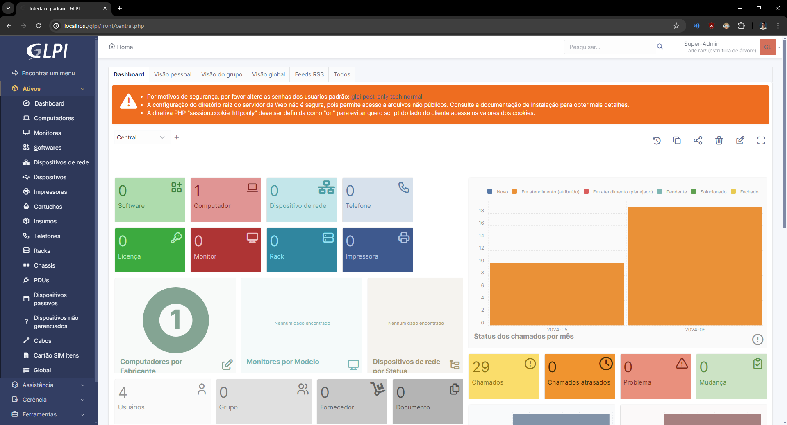
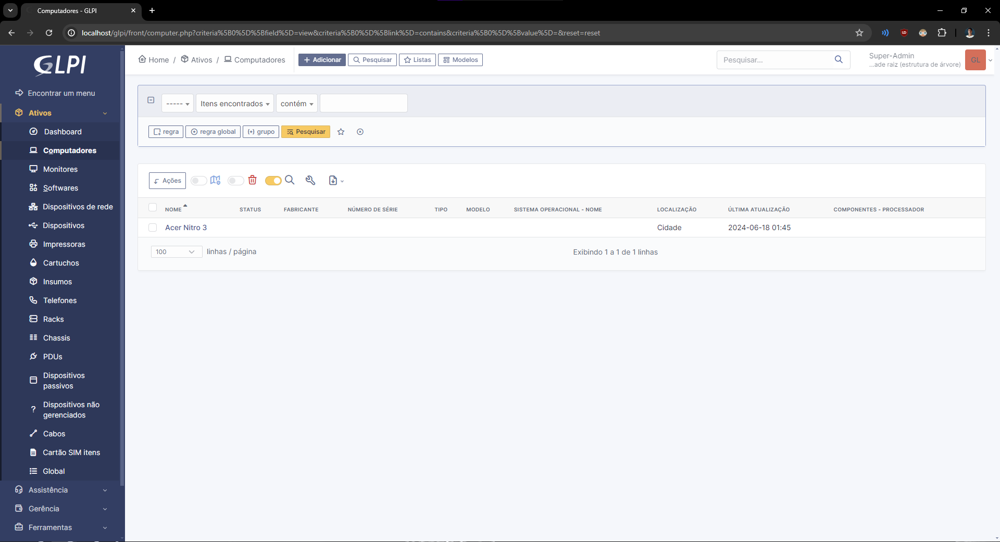
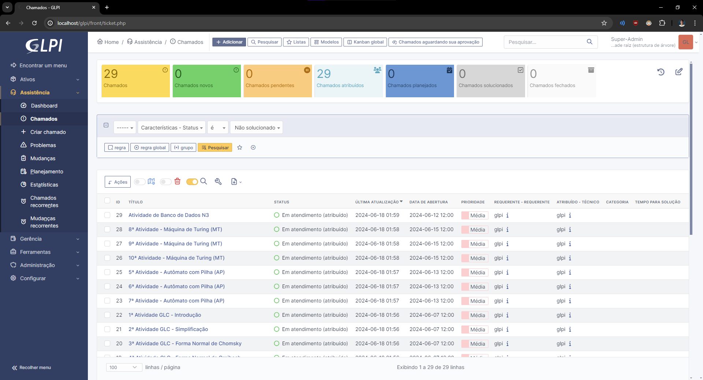
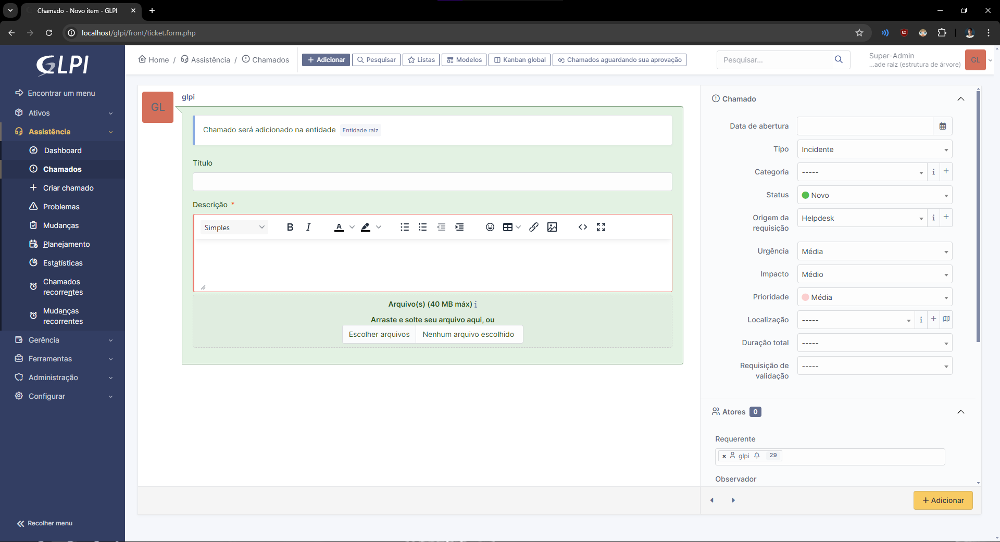

GLPI
O que é o GLPI?
GLPI (Gestionnaire Libre de Parc Informatique) é um software de gerenciamento de ativos de TI e helpdesk. Ele permite que as organizações gerenciem seus ativos de hardware e software, acompanhem problemas e solicitações, e otimizem processos de TI.
Principais Funcionalidades do GLPI
- Gerenciamento de inventário
- Sistema de helpdesk
- Relatórios e análises
- Integração com outros sistemas
Instalação do GLPI
Passo a passo para instalar o GLPI no seu ambiente. Inclui pré-requisitos, download e configuração inicial.
Instalação
- XAMPP: O XAMPP é uma distribuição do Apache fácil de instalar contendo PHP, MySQL e Perl.
Primeiro Passo
Eu utilizei o XAMPP para instalar o GLPI. Para começar, faça o download do XAMPP.
Após a instalação do XAMPP, baixe a última versão estável do GLPI, que é o GLPI 10.0.15.
Segundo Passo
Após baixar o GLPI, extraia a pasta e mova-a para o diretório htdocs dentro da pasta do XAMPP.
Terceiro Passo
Os módulos gd e intl, precisam estar presentes, então edite o php.ini que se encontra em apache/condig para descomentá-los e garantir que estejam habilitados.
Inicie os serviços Apache e MySQL no XAMPP. Em seguida, abra seu navegador e digite http://localhost/glpi para acessar a interface principal do GLPI.
Configuração Básica do GLPI
Após a instalação, configure o GLPI de acordo com suas necessidades. Defina o idioma padrão e continue com a instalação.
Gerenciamento de Usuários
Pagina inicial do glpi, aqui voce deve criar um ativo de acordo com sua necessidade, criei o ativo de acer nitro 3 que é o meu computador, preenchendo o formulário ao meu gosto, para indicar que ele vem criar os chamados


Gerenciamento de Chamados
Em assistencia/chamados, aparecem os chamados e deve ser criado sempre que uma tarefa nova for executada, nesse caso de uso utilizamos para demarcar as atividades de sala
Chamados registrados

Tela de criação de chamados
